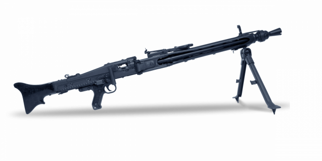
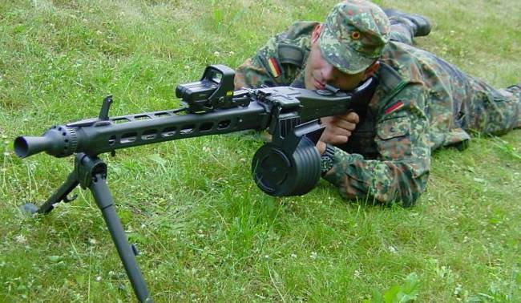

MG 3


MG3 – niemiecki uniwersalny karabin maszynowy produkowany przez firmę Rheinmetall AG z Ratingen. Jest to wersja ukm-u MG 42 przystosowana do zasilania nabojem 7,62 x 51 mm NATO. Używany przez armie ponad 30 państw.
W 1968 roku rozpoczęto produkcję karabinu maszynowego MG3. Była to wersja ukm-u MG1A3. Nowy km został przystosowany do zasilania nową taśmą rozsypną DM6 (zachowano możliwość zasilania przy pomocy taśm DM1 i M13). MG3 został wyposażony w celownik przeciwlotniczy oraz nowy typ zasobnika na taśmę. Udoskonalono także konstrukcję donośnika przesuwakowego.